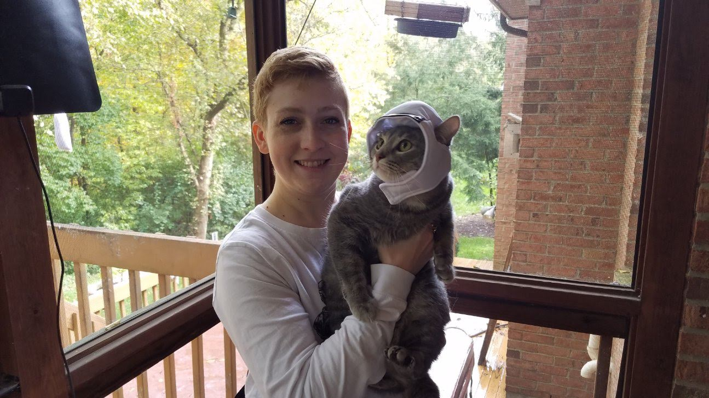

Me and my cat, Noodle
Personal and Professional Timeline
- In 1992, I was born in Dallas, Texas, marking the beginning of my journey.
- In 1994, my family and I relocated to Cincinnati, Ohio, where I spent most of my childhood and formative years.
- In 2010, I graduated from high school in Cincinnati and moved to Columbus, Ohio to pursue higher education at The Ohio State University.
- In 2014, I earned a Bachelor's Degree in Linguistics from Ohio State University, specializing in Sociolinguistics.
- In 2017, I embarked on my professional career by joining a multi-location bridal store based in Columbus, where I gained significant industry experience.
- In 2021, I returned to Cincinnati to explore and take advantage of new professional opportunities that aligned with my career goals.
- In 2024, I took a significant step towards enhancing my technical skills by enrolling in a comprehensive Bootcamp Coding Course at Kable Academy.